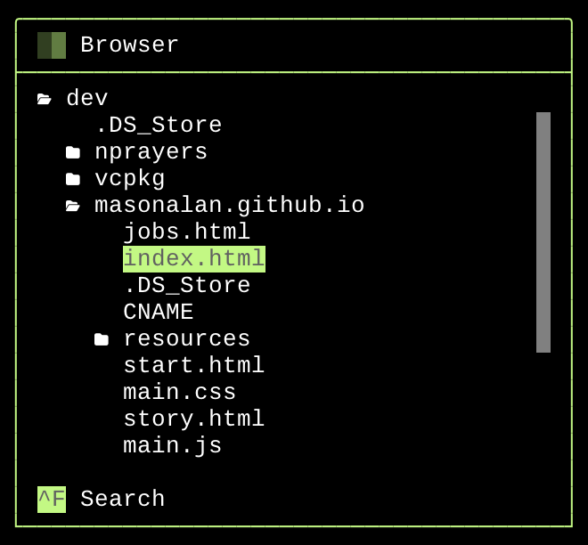
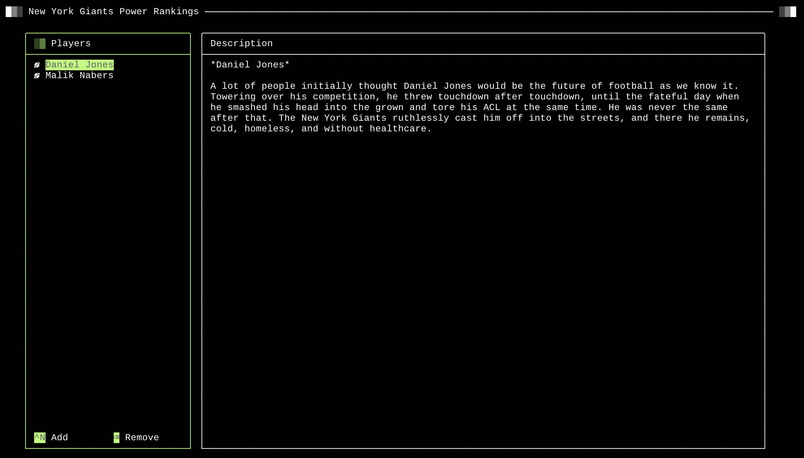
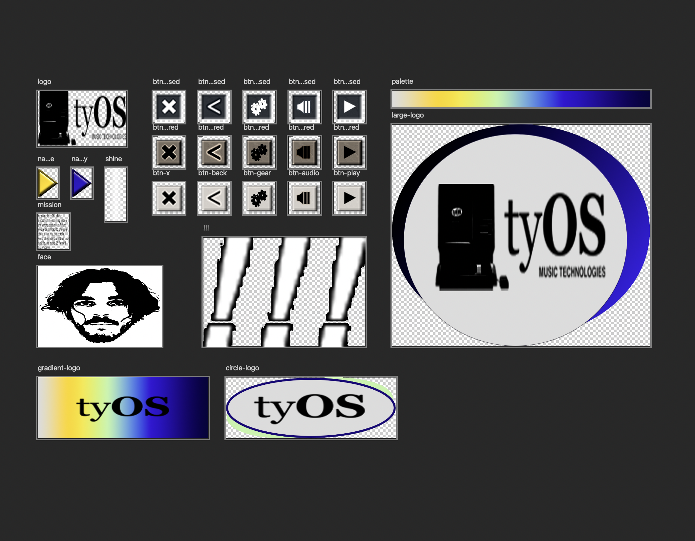
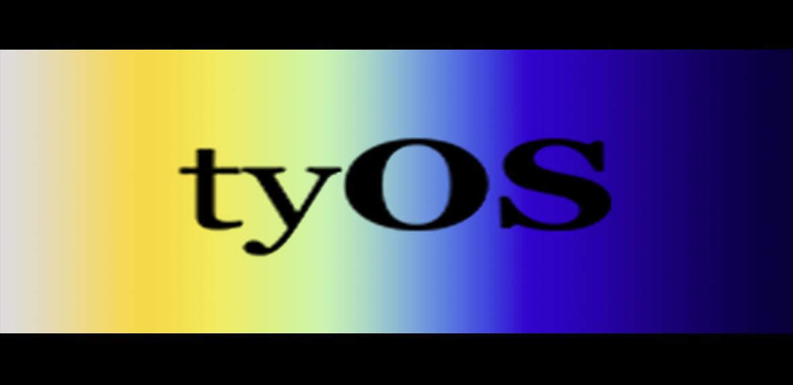
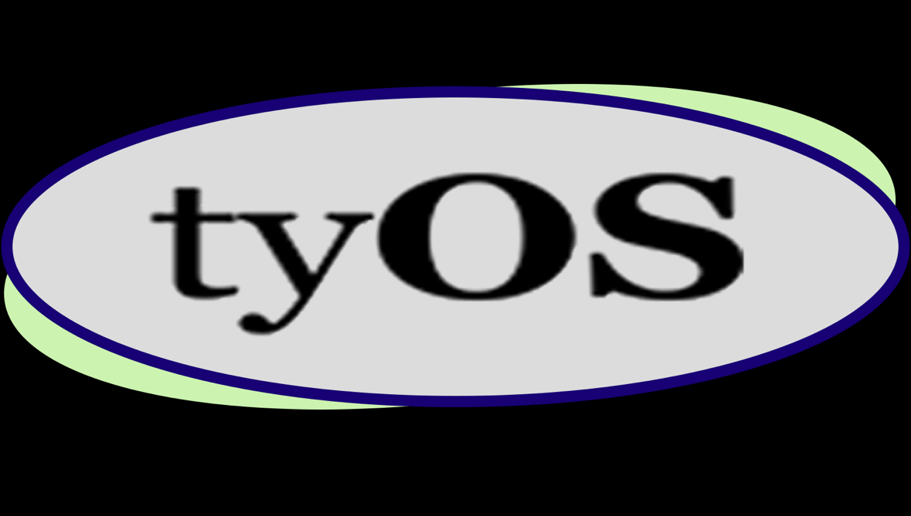

At tyOS, we pride ourselves on making beautiful, easy to use technologies for whatever you may need. Please, have a look at a list of our projects below. We would love to hear your feedback!
Table of Contents:
Granular Synth
a collaboration with Ritual ObjectWe are building a granular synth with an Arduino and designing a case for it. Granular synthesis is the process of taking a small sample, or "grain", of some audio (e.g. 0.1s), looping it quickly to create a new sound.
fig a. 3D mockups of the case

fig b. synth circuit

You can check out the source code here.
Trundle: A Terminal UI Library
Trundle is a C++ TUI library (will have Python bindings soon hopefully). The library provides a robust set of widgets for users to flexibly build entirely text based UIs.fig a. a file browser tree view

 fig b. searching a tree view
fig b. searching a tree view
fig c. a simple text editor

fig d. a prompt with a text field

You can check out the source code here.
tyWorld
tyWorld is a simple OpenGL planet simulator written in C++. The planets are cubes and the asteroid belts are rendered using instanced rendering. The focus of this project was to learn about different types of lighting.fig a. demo of tyWorld
You can check out the source code here.
tyOS Assets
We designed our brand ourselves. Here are the assets used to make this website. We do this because we don't believe in web frameworks or web development at all.fig a. assets

fig b. alt logo 1


fig c. alt logo 2